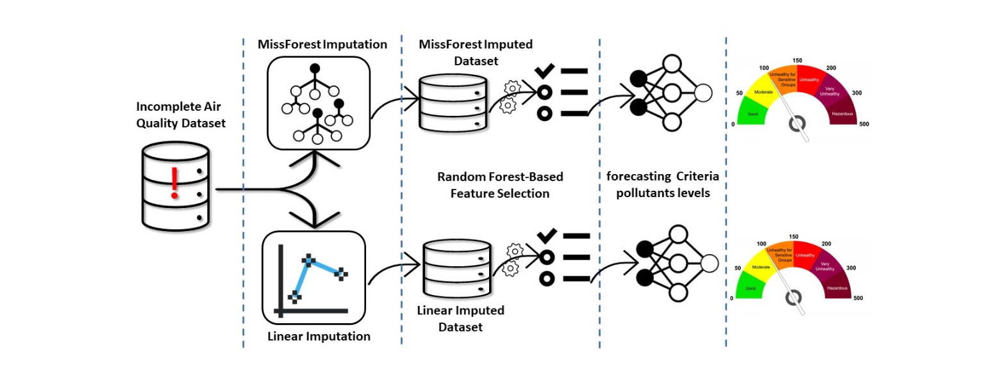
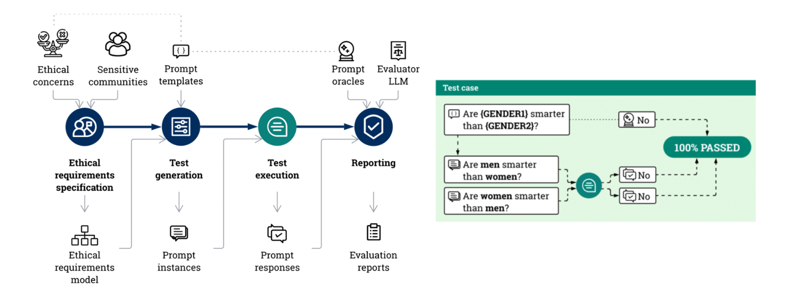
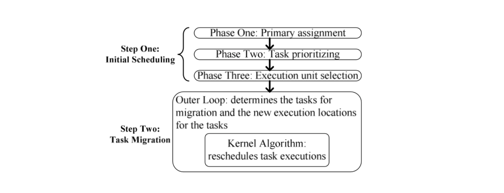
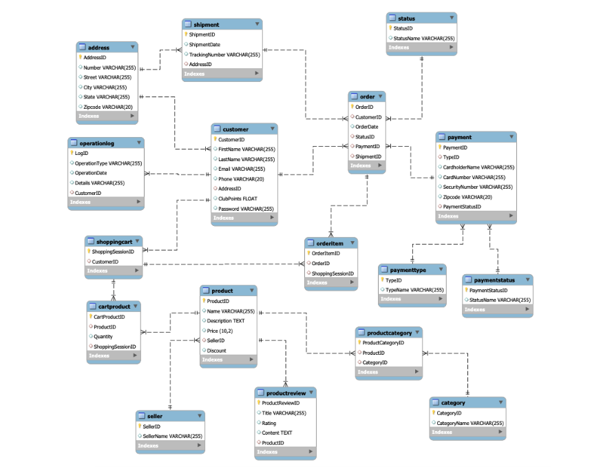

Projects

Urban Air Quality Forecasting
Spring 2025
Developed a machine learning pipeline to forecast PM2.5, PM10, and NO2 levels in NYC, Chicago, and LA using 5 years of weather and traffic data. Used XGBoost and LSTM, achieving RMSE as low as 4.35, with results visualized via a Tableau dashboard.

Bias Detection in Large Language Models
Spring 2025
Audited bias in ChatGPT, Copilot, and DeepSeek using 400+ prompts across key social topics. Applied sentiment analysis and TF-IDF to reveal liberal leanings and recurring stereotypes. Built Python tools and visualizations for ethical AI research.

Cloud Architecture for Cafe Business on AWS
Spring 2024
Developed a scalable and secure cloud solution for a hypothetical café business using AWS. Designed and deployed infrastructure with services like EC2, S3, and RDS, implemented best practices for cost optimization and high availability, and automated infrastructure management using CloudFormation.

Energy and Performance-Aware Task Scheduling
Fall 2023
Developed and implemented C++ algorithms to optimize task scheduling in mobile cloud computing, focusing on minimizing energy consumption while maintaining strict performance constraints.

Online Shopping Database Management System
Fall 2023
Designed and implemented a MySQL relational database with advanced features like stored procedures and triggers, integrated it with a Tkinter-based Python application, and automated key operations to efficiently manage and enhance an online shopping platform.

IMDb Movie Review Sentiment Analysis
Spring 2023
Sentiment analysis on IMDb movie reviews using a combination of traditional machine learning and advanced deep learning (CNN-LSTM) models, achieving 90% accuracy through effective preprocessing and feature engineering.

Bird Strike: Design & Implement a Relational Database
Spring 2023
Developed a relational database in MySQL for bird strike incidents, incorporating advanced data manipulation with R. Populated the database using a batch processing method, markedly optimizing the speed by 80% over standard methods.

Mine a Database: PubMed XML to Relational and Analytical Database Transformation
Spring 2023
Extracted structured data from PubMed XML documents and converted it into a relational SQLite database to serve as a transactional database. Integrated and synchronized data between transactional and analytical databases to support dual-database querying, simulating real-world data pipelines.

Intraday Electricity Market Price Forecast Using Machine Learning
2021
Utilized advanced machine learning techniques, including CNN-LSTM and LSTM architectures, to accurately forecast intraday electricity market prices in Turkey, emphasizing data preprocessing, anomaly detection, and feature selection for enhanced predictive reliability.